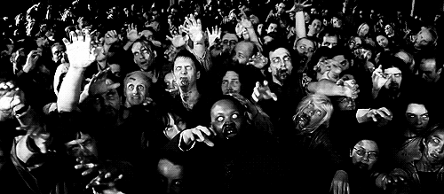

Waarin wiikkowiesti 12/2018 - Wapun ajan aikataulu!
26.04.2018 fuksit / wiikkoviesti / wappu /
Enää muutama päivä Wappuun!
Onkin hyvä kerrata, millaisia koitoksia vielä oikein on tulossa. Sunnuntain Fuksispekseistä Hullu Jussi-rastiseikkailuun, maanantain Zombieaamiaisen kautta Amfille lakkienjakoon, killan Wappucruiselle ja illalla vielä Dipolin Wappuun asettamaan yhdessä upouudet teekkarilakkinne päähän!
Lakkienjaossa täytyy olla mukana teekkarilakin maksukuitti ja vasta saatu esteettömyystodistuksesi. Lisäksi suosittelen nappaamaan mukaan esimerkiksi jotain evästä, ettei Amfilta tarvitse poistua kauppaan tai muualle. Kunnioitetaan muita paikalla olevia fukseja, ja seurataan heidänkin lakkien saantiaan! Muistuttaisin, myös ettei teekkarilakkia laiteta päähän vielä aamulla lakkienjaon yhteydessä, vaan vasta keskiyöllä!
<3 Milla
Sisällysluettelo
- Tärkeää
- Fuksispeksit su 29.4. klo 16:30 @ Kaleva-sali, Dipoli
- Zombieaamiainen ma 30.4. klo 06:30 @ Takkakabinetti, Jämeräntaival 3
- Loppunurkkaus
Tärkeää
1. Fuksispeksit su 29.4. klo 16:30 @ Kaleva-sali, Dipoli
Vuoden 2018 Fuksipeijaisten Fuksispeksit ovat täällä!
Fuksispekseissä fukseista koostuvat peijaisjoukkueet esittävät täysin itse valmistelemansa spektaakkelit osana vuoden 2018 Fuksipeijaisia! Fuksispeksit ovat toinen toistaan kekseliäämpiä performansseja, jotka fuksit ovat valmistelleet niin omaksi, kuin koko teekkari- ja Aaltoyhteisön iloksi. Saapukaa siis joukoin paikalle, mutta jättäkäähän Wappubileiden sangot tällä kertaa kotiin, sillä yliopiston tiloihin ei omia teekkaria väkevämpiä juomia pidä tuoman!
Fuksispeksit järjestetään Dipolin Kaleva-salissa sunnuntaina 29.4. klo 16:30 alkaen. Kaleva-salin ovet avataan yleisölle klo 16:00. Esiintyvien joukkueiden on syytä olla paikalla tällöin!
Väliaikashowna on luvassa huikeaakin huikeampi Teekkarispeksin esitys!
2. Zombieaamiainen ma 30.4. klo 06:30 @ Takkakabinetti, Jämeräntaival 3
Viimeinen ateria kuolleille fukseille, zombeille, ennen ylösnousemusta teekkariksi tarjoillaan klo 6:30 alkaen JMT3:n Takkakabinetissa.
Zombieaamiaisella jaetaan esteettömyystodistukset kaikille lakkinsa Amfilla ansainnelle, sekä siirrytään yhdessä ohjatusti lakkienjakoon. Kaikkien lakkinsa Amfilla haluavien on oltava paikalla!
Loppunurkkaus
Zombieaamiaisen tunnelmat...
